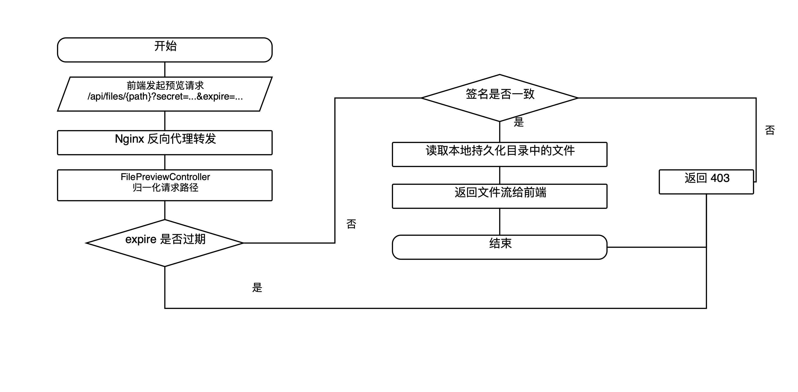

核心实现 ② · 预览访问链路修复
PREVIEW CHAIN FIX
★ 工程亮点
09
/
16
图 4.8 · 文件预览访问链路图
Preview Chain

三类路径统一
/api/files · /api/thum · /api/trans
secret + expire 签名
防盗链 + 防过期续命，攻击者无法离线构造
路径越界检查
归一化必须落在 /files 内，杜绝 ../
改造前
反向代理叠加签名校验时频繁返回 failed
→
改造后
预览链路稳定，分享 / 缩略图 / 转码资源全部共用此校验